Node.js is a platform that allows coders to use Javascript to work both the front and backend of web applications. One of the benefits of using Node.js is that it is non-blocking. For example, when using Apache, each client is assigned a dedicated thread that facilitates all transactions. However, when the thread is given a request, it will ignore all other requests until that request has been fulfilled, even if it is just waiting for data on the server-end of things. In contrast, a non-blocking model like Node.js assigns one thread for all users but this thread is able to perform tasks asynchronously. If its current request requires some data to be retrieved from the server, it simply moves on to the next request rather than idly wait for that data to be ready.
Running Node.js
To run Node, you'll first need to install it. Now you can use Node to run JS files. You can do so by navigating to the files in your command line and writing node filename. You don't need to add the extension at the end because Node automatically assumes it will be a JS file.
The Global Object
Node has access to a global object which contains some stuff Node can parse and use without having to import any other modules. One of these is the very familiar console object, which is used to generate output to the console. We can also use the global to return the directory name and filename via the variables __dirname and __filename respectively.
Global Objects
process object
The process object is useful for finding out information on the current process as well as interacting with that process by accessing command-line arguments.
process.pid
Returns the pid of the current process (which will probably be the current file).
process.versions.node
Returns the version of Node that is running the current process.
process.argv
Returns an array that was typed in the command-line to run the process. For ex. if we had a module called cats, we'd run it in the commandline with node cats. The resulting argv array would have two elements: the file path to wherever Node is installed, and the path to whereever the cats module is. You can extend this function to pass arguments to your modules.
process.stdout.write("some output")
Sends some test to standard output.
process.stdin.on("data", do something with data)
Activates a listener that records the next data input event (any key input followed by enter). These inputs are recorded into the first argument:data. The second argument (commonly a function), does something with that data. For example, the following codes takes the data input and repeats it back to the user:
Note that the recorded data is stored as a binary so we need to use the toString() function to change it to a String.
To add functionality beyond the global, we'll need to add modules. Modules are essentially Node.js files written to do specific things. Node comes with its own set of modules and we can also use modules that we install with NPM or modules we've written ourselves. To import a module, we'll need to use the global object's require function.
require("modulePath")
Finds and returns the specified module.
For example, we can import the path object and use its basename() function to return the filename of a given path.
Core Modules
As said before, there are modules that come shipped with Node. These are called Core Modules. Here's a compendium of major global modules.
readline Module
The readline module works with standard input and output and makes it easy to create an app that responds to user input. First we'll need to import the mdodule.
Now we need to create an interface for readline using its createInterface function. We're simply specifying what our current process will use as input and output.
Now we're free to use any of the readline functions to gather user data and generate output.
interfaceVar.question("a question", do something with the data)
Sends a specified prompt and then manipulates the returned data. The first argument is the question. The second argument holds the callback function used to manipulate the data that is returned. The below example takes the input and echos it back to the user.
Events
The Events module allows you to generate custom events, allowing you to wire listeners and handlers for those events.
After importing, you construct a new event emitter object using the EventEmitter() constructor
Now we can start raising events wherever we want.
emitterVar.emit("eventName",data1,data2,...)
Used to raise an event. The first argument is the event's name. The following arguments are the data you want to pass to the handler
emitterVar.on("eventName", callback handler)
Used to wire a handler to custom events. To wire, the event name used here as the 1st argument must match the event name you defined in the corresponding .emit() function.
Using Custom Modules
Sometimes when we're writing modules, we want to incorporate things from past modules we've created. To grab them, we'll first need to make them exportable. We do this by going to the module we want to export, using the module.exports method and putting all our functions we want to export into a comma-separated list.
Now when we import our custom module using the requires function, we'll have access to all module methods we chose to export. Note: if we want to access the values of variables local to the modules we import, we'll need to have getter and setter functions defined within our imported module and use those to retrieve the values.
Interacting with Files
Node is also capable of messing around with the file system with a handy module called fs. Like any module, we'll need to import it first before we can use it.
fsVar.readdirSync("path")
Returns the contents of the directory specified by the path as an array. As hinted by the name, this is executed synchronouly; no further lines of code will be executed past this point until all the file names have been retrieved.
The asynchronous version of file scanning. Now instead of returning the array, a callback function is used. The first argument of the callback function is any errors that may have occured. The second argument is the files themselves.
fsVar.readFileSync("path", "text encoding")
Returns the text contents of the file specified by the path. Synchronous. For files with binary contents (like images), you don't supply an encoding.
The asynchronous version of file reading. Now instead of returning the text, a callback function is used. The first argument of the callback function is any errors that may have occured. The second argument is the text itself. For files with binary contents (like images), you don't supply an encoding.
fsVar.writeFile("path",text you want to use, err=>{ error handler})
Creates a directory with the given name in the current file location. If the directory exists, an error will be thrown. You can check if the directory exists first using the existsSync() function.
fsVar.existsSync("path")
Returns a boolean whether or not the file given by the specified path exists.
fsVar.appendFile("path",text you want to use, err=>{ error handler})
Appends the specified text to the specified file. If the file does not exist, it will be created.
fsVar.renameSync("path","new filename")
Synchronously renames a file. First argument is the path of the file to be renamed. The second argument is the new name for the file. The file may also be moved as well if a path is provided as the second argument. Can also be used to rename directories.
Asynchronously writes to a file specified by the given path. First argument is the path of the file to be renamed. The second argument is the new name for the file. The file may also be moved as well if a path is provided as the second argument. Third argument is the event handler for any errors. This function can also be used to rename directories.
fsVar.unlinkSync("path")
Deletes the file specified by the given path.
fsVar.rmdir("path",err=>{ error handler})
Asynchronously deletes the directory specified by the given path. First argument is the path of the file to be renamed. Second argument is the event handler for any errors. Note: directory must be empty before it can be deleted.
fsVar.createReadStream("path","text encoding")
Takes the text in the specified file and returns a readable stream of data that can be processed bit by bit, according to data events. Examples of events are .on("data"...), or .once("data",...)
fsVar.createWriteStream("path","text encoding")
Creates and returns a write stream to the specified file. Assign this to a variable and call the .write("text") function to write that text to the file as a stream. Can combine with the read stream to copy contents of one file into another. Can also try the pipe keyword which directly hooks the output of one object as the arguments of another.
Child Processes
Node also lets you create and handle child processes, which are other applications that your app can communicate with. To start, we import the child_process module.
cpVar.exec("open path or url of resource to open")
Executes the specified synchronous program. You can also use any bash commands by using the following syntax: cpVar.exec("command",(err, data)=>{}). If you want to use a child process that is asynchronous, use the .spawn() function.
cpVar.spawn("node",["module file path"])
Executes the specified asynchronous program as a child and returns an object that can be manipulated in the parent module, providing input and receiving any ouput.
The HTTP and HTTPS Module
The HTTP and HTTPS modules allow you to access and deploy resources on the internet. Before we do anything, we'll first need to import the appropiate module. If the target site is http, we'll need to use the http module; the same logic applies for https sites.
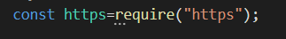
Creating a GET request
For a GET request, we'll first need to build an object that will contain all of our properties for our request. We'll need to supply:
hostname
port number
path
method
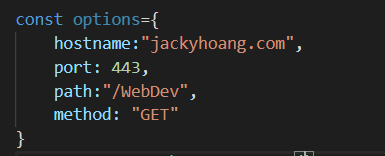
Once we have our options, we can use the request() function to make our request. This function takes two arguments. The first is the object containing all our connection properties. The second is a callback function that will allow us to work with the resource when it is retrieved.
.
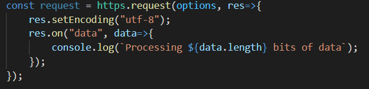
The optional setEncoding() allows us to format the stream that it comes back as a string instead of just bits.
Not bad, but the HTTP modules provide an even easier way to make GET requests, through the get method. Instead of plugging in an object with all of our paramters, we just type in the URL. The get method will automatically retrieve the rest of the parameters for us!
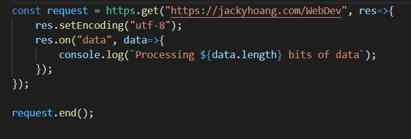
Regardless of which method is used, remember to call .end() on your request object to end the connection after you're done.
Creating a Web Server
We can use the createServer() function to create a web server. Before we put any arguments in, we'll set the port that our server will listen to (in this case 3000).
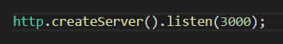
Now for our argument. We'll use a callback handler that will be passed two objects that are returned for every request to our chosen port: a request and a response object. First we'll focus on the response, i.e. what is sent back to users who make a request. We use response.writeHead() to send a header to the browser with a code (200 for success) as well as the encoding of our response. We use response.end() to end the response and return some content to the clients browser. In this case, just a simple "Hello World" string. Finally we set a log message to let us know that the Web Server is active.
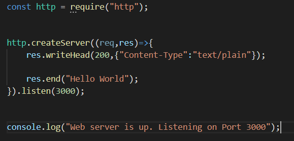
Now when we navigate to port 3000 on our browser, we'll see our response we just created.
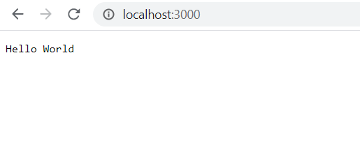
Rather than send text, its more likely we'll want to deliver web pages to our clients. To send HTML instead, just change the Content-type to "text/html". Now instead of a string, you can put in full HTML into the resouce.end() function.
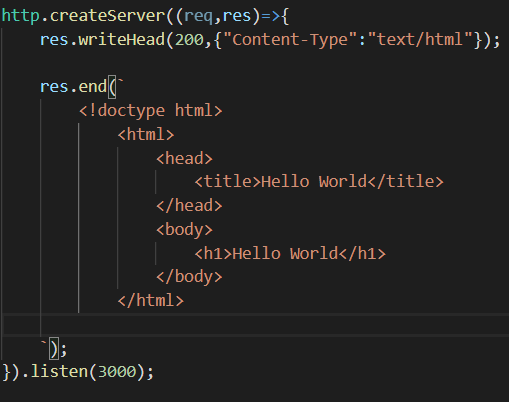
So if thats the response object, then what is the request object for? Well the request object has a few property values that we can grab to use. For example, calling request.method returns the method used in the request i.e. a GET or a POST. If you call request.url, you get the URL that was used to make the request. These properties are important for deciding what should get sent out in the response.
Creating a File Server
Now that we know how to serve up single pages, we can use our knowledge of the filesystem to generate a fileserver to serve multiple files.
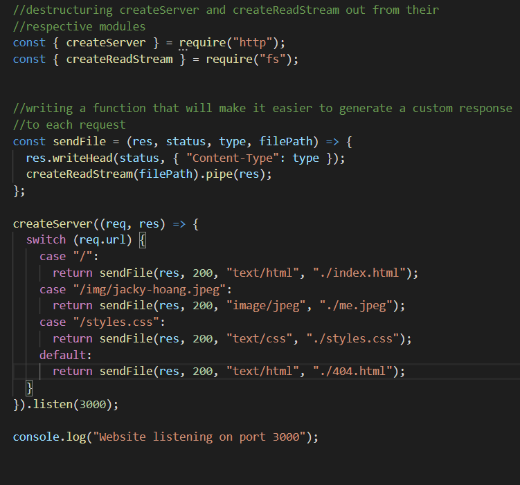
As you can see, the request object becomes handy in determining what page is sent as a response to the user, based on the URL they entered.
Third-party File Servers
Instead of coding it ourselves, we can actually set up servers by simply using a prebuilt package. One of these is the serve package. It's a global package which means we can use this anywhere, in any folder to start a file server. Another good tool is express package which provides a nice framework for creating file servers.
Creating Files Server with Express
The basic framework for building file servers with Express is as follows.
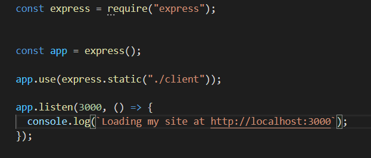
We import the express module and create an instance of the app object using the express() function. We use app.use(express.static("directory location")) to serve our static webpages which are all stored in that directory. Finally we set up our listener on port 3000 with app.listen() which contains a callback function that will load a message to console when our webpage is up and running.
Collecting POST Data
Forms are a good way of collecting data from your users. When creating web forms in HTML, we can set a property to have the form POST the data back to the server when the form is complete.
Then, when users fill out a form on your site, a POST request is sent to the server where it can be managed in the createServer() function.
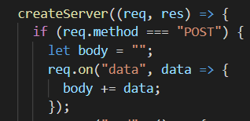
The POST data that comes back arrived enocded in a URL format which makes it slightly hard to use. Luckily, Node.js has a core module called querystring that will help us decode URL data.
First we'll destructure the decode method out from the querystring module
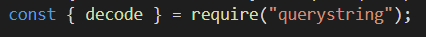
Then, we'll use the decoder to decode the data once we've finished collecting it from the stream.
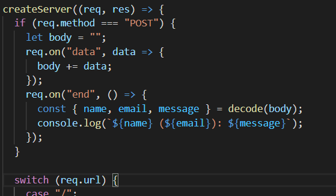
What are packages?
In Node.js, whenever we start a project, we typically want to create a new package. We do so with in the commandline with NPM.
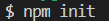
This starts a walkthrough where we get asked what we want our package to be called, the author, a description and so on. Upon completion, we get a package.json file, that has all the parameters and values we provided.
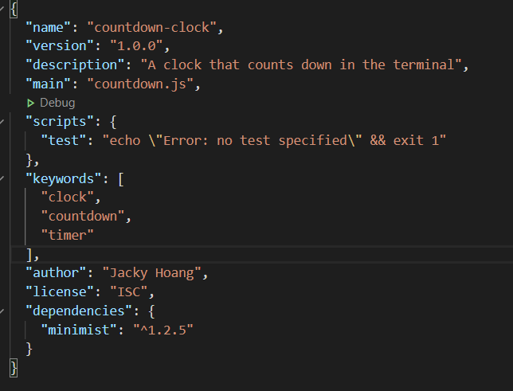
Now we can create our module, which must be named the same as the answer we provided in the main section of the JSON. When we install and use new modules from NPM, the package.json will automatically update itself, listing each new package we've installed as a dependency. These external modules are installed in a folder called node_modules. If at some point this folder is deleted, our module won't run anymore! Luckily, all we need to do is run npm install from the command line and NPM will go to our package.json folder, find the dependencies, and install them automatically. Another useful command is NPM outdated which checks whether any of the dependencies in the project have newer versions available.
Global packages
If we want to make our modules runnable from anywhere, not just the project folder there are a couple steps:
Add the following line to the top of the package.json:
#!/usr/bin/env node. This tells Bash to use Node when running this file.
Also in the package.json, add the property "bin:" and put any keywords you want to use to activate your module globally, followed by the filename of the module. It should look something like this:
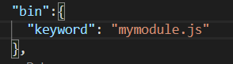
In the project folder, enter the keywords npm link in the command line. This links the project to the list of global commands.